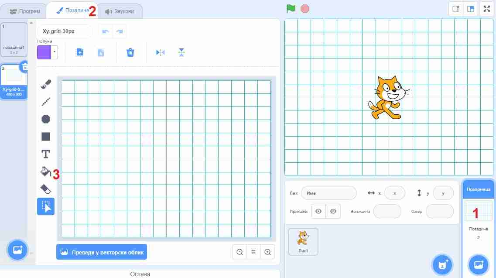
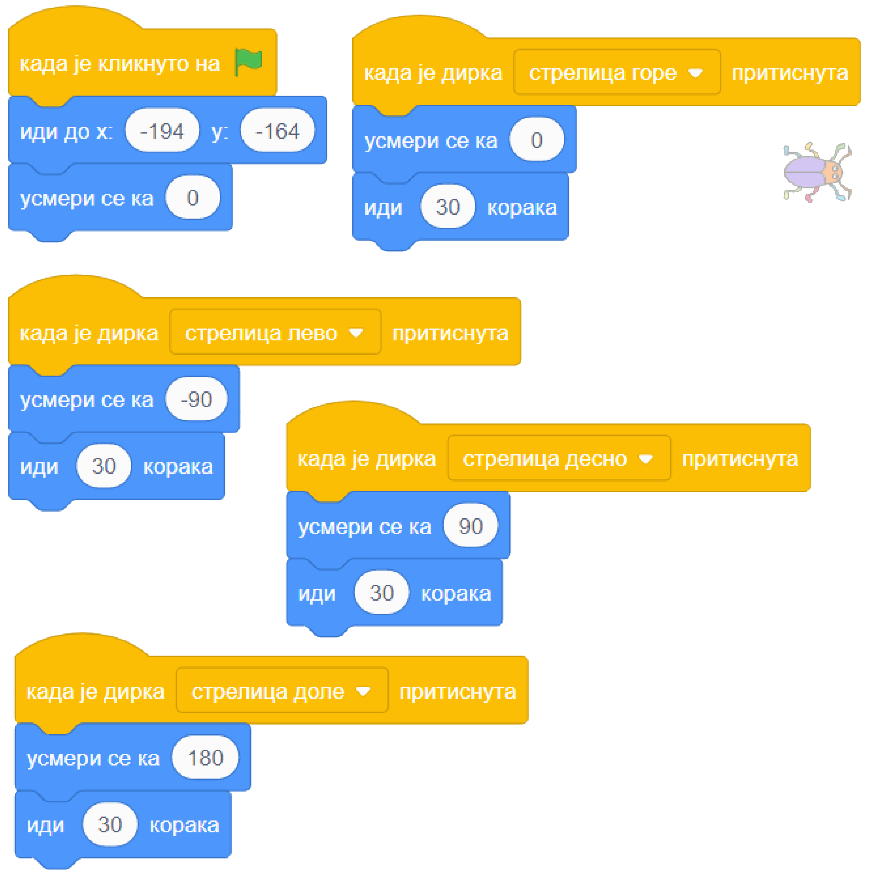

3.1. Низање корака¶
У оквиру овог часа вежбаћеш:
Препознавање начина употребе блока по његовом облику
Прављење скрипти у којима се кораци само нижу један за другим
Усклађивање скрипти различитих ликова по времену помоћу чекања
Из досадашњих примера вероватно примећујеш да у Скречу постоји неколико врста блокова, који се разликују по боји и облику. Занемари за тренутак боје блокова и обрати пажњу на облике, јер по облику блока може да се препозна начин његовог коришћења.
Врсте блокова по начину коришћења
Све блокове који постоје у Скречу можемо да разврстамо у самосталне и функцијске блокове. Самостални блокови представљају наредбе језика, односно кораке алгоритма. Неки од тих блокова имају поља у која се може поставити вредност. Функцијски блокови представљају вредности. Они не могу да стоје сами у скрипти, већ се умећу у поља блокова који примају вредности. На тај начин функцијски блокови прецизирају начин извршавања других блокова.
Међу самосталним блоковима разликујемо ове подврсте:
Почетни блокови говоре који догађај покреће скрипту. Тај догађај може да буде, на пример, клик на зелену заставицу изнад позорнице или притисак на неку дирку тастатуре. Ови блокови се налазе у групи блокова Догађаји и свака скрипта мора да почне једним оваквим блоком.
Завршни блокови не морају да се користе у скриптама. Завршни блок ће ти бити потребан само ако у неком тренутку желиш да зауставиш све скрипте једног лика, или све скрипте свих ликова. Ови блокови се налазе у групи блокова Управљање.
Блокови акције говоре шта треба урадити. Овакви блокови се нижу један испод другог и извршавају редом. Овакви су, на пример, блокови
 ,
,  ,
,  , а разврстани су у различите групе, зависно од врсте акције.
, а разврстани су у различите групе, зависно од врсте акције.Управљачки блокови задају редослед извршавања других блокова. Овакви блокови служе да понове извршавање неке групе блокова потребан број пута, или да задају под којим условом треба извршити неку групу блокова. Ови блокови се налазе у групи блокова Управљање и њима ћемо се бавити у лекцијама о понављању и гранању и касније.
Постоје и две подврсте функцијских блокова:
Блокови репортери нам саопштавају колика је нека вредност. Неке овакве блокове (
 ,
,  ,
,  ) смо већ упознали, а ускоро ћемо их упознати још.
) смо већ упознали, а ускоро ћемо их упознати још.Логички блокови нам саопштавају да ли је нешто тачно или нетачно. О њима ћемо научити више у лекцијама о понављању и гранању.
Облик блокова не служи само да можемо да препознамо начин употребе. Испупчења и удубљења на самосталним блоковима показују који блокови могу да се надовезују, а који не. Исто тако, облик функцијских блокова показује у која поља самосталних блокова они могу да се убаце. Омогућено је повезивање само оних блокова за које то има смисла (Скреч нам неће дозволити да повезујемо блокове на начин који нема смисла).
У многим скриптама блокови се само стављају један испод другог, а не и један у други. При томе сваки блок представља један корак у алгоритму, а алгоритам се извршава тако што се кораци просто извршавају редом, један за другим (нема прескакања, нити враћања на већ извршене блокове). Зато се ова лекција зове низање корака, а алгоритми које ћемо да програмирамо се зову алгоритми линијске структуре.
Погледај видео:
У овом видеу видећеш како да научиш ликове да скоче. Такође, научићеш како да синхронизујеш кретање ликова.

{kind=link}
Примери¶
Пример 1 - Лавиринт¶
Направићемо лавиринт, у коме корисник програма може помоћу стрелица на тастатури да води бубу до излаза.

Лавиринт ћеш најлакше направити ако из галерије позадина изабереш позадину „Xy-grid-30px”, коју ћеш затим прилагодити. Ова позадина садржи квадратну мрежу (енгл. grid), у којој је сваки квадрат величине 30 корака.

Када изабереш ову позадину, кликни на њу у листи (корак 1 на слици), а затим кликни на картицу „Позадине” (корак 2 на слици).
{kind=link}
Унутар картице „Позадине” имамо могућност да уређујемо и преправљамо позадину, слично као у програму „Бојанка” (Paint). Изабери кантицу (корак 3 на претходној слици) и обој нека поља по жељи, тако да добијеш лавиринт.
На сличан начин можеш да преправљаш и изглед ликова, треба само да кликнеш на лик у листи ликова, тако да он постане активан, а затим на картицу. Када мењамо изглед лика, картица се не зове „Позадине” него „Костими”, јер позорница има позадине, а лик костиме.
Прелазимо на ликове. Једини лик у пројекту је буба. Додај је у пројекат, промени јој име (1), подеси јој величину тако да може да стане у једно поље лавиринта (2) и постави је на почетно место (3).
{kind=link}
Остаје још да испрограмирамо бубу. Када програм почне, желимо да се буба врати на почетну позицију и окрене у одговарајућем смеру (у нашем лавирину то је на горе). Осим тога, на притисак сваке од стрелица на тастатури (горе, доле, лево, десно), буба треба да се окрене у одговрарајућем смеру и помери се 30 корака, јер је толика величина поља. То значи да ћемо за бубу имати 5 малих скрипти - једну за почетак програма и четири за стрелице (по једну за сваку стрелицу).
Ево како скрипте изгледају у нашем примеру лавиринта:
{kind=link}
Блок се, као и  , налази у групи „Догађаји”, што препознајемо и по боји блока.
, налази у групи „Догађаји”, што препознајемо и по боји блока.
Запамти: сваки лик може да има неограничен број скрипти. У примеру „Лавиринт” оне се стартују на различите начине, али лик може да има и више скрипти које се стартују на исти начин, на пример две скрипте које се обе стартују кликом на зелену заставицу.
Направи приказане скрипте и испробај програм. Колико брзо можеш да изведеш бубу из лавиринта без варања (стајања на љубичаста поља)?
Пример 2 - Одскакање лопте¶
У овом пројекту ћемо приказати лопту која полази из неке тачке високо на позорници, затим неколико пута пада и одскаче. Из галерије ликова искористићемо лик  , а као позорницу ћемо одабрати кошаркашко игралиште.
, а као позорницу ћемо одабрати кошаркашко игралиште.
Скрипту, наравно, започињемо блоком . Први корак је да поставимо лопту на почетно место, а за то ћемо употребити блок . У наставку нам је довољно само још неколико блокова  , који ће померати лопту доле-горе. Битно је да ових блокова буде непаран број, на пример 7, јер лопта треба да заврши доле.
, који ће померати лопту доле-горе. Битно је да ових блокова буде непаран број, на пример 7, јер лопта треба да заврши доле.
Знамо да је лопта која одскаче нешто бржа доле, а спорија горе. Да би наша анимација мало више личила на стварност, можемо да убацимо по један блок сваки пут када је лопта горе. Према томе, скрипта има овај облик:
{kind=link}
Теби остаје да упишеш вредности координата и трајање клизања и чекања. Пре него што то урадиш, подсети се како се мењају координате при кретању по позорници:
- Y се повећава а X се не мења.
- Лопта која пада иде ка дну позорнице. Да ли су Y координате при дну позорнице мање или веће? Размисли и покушај да исправиш одговор.
- Y се смањује а X се не мења.
- Тако је!
- X се повећава а Y се не мења.
- Која координата се мења ако се лик креће на доле? Размисли и покушај да исправиш одговор.
- X се смањује а Y се не мења.
- Која координата се мења ако се лик креће на доле? Размисли и покушај да исправиш одговор.
Q-17: Како се мењају координате лопте која пада?
- Y се повећава а X се не мења.
- Тако је!
- Y се смањује а X се не мења.
- Лопта иде у вис, тј. ка врху позорнице. Да ли су Y координате при врху позорнице мање или веће? Размисли и покушај да исправиш одговор.
- X се повећава а Y се не мења.
- Која координата се мења ако се лик креће на горе? Размисли и покушај да исправиш одговор.
- X се смањује а Y се не мења.
- Која координата се мења ако се лик креће на горе? Размисли и покушај да исправиш одговор.
Q-18: Како се мењају координате лопте након што се она одбије од земље?
Сада, када знаш коју координату да мењаш, а коју не, треба мало да експериментишеш. Слободно покушавај више пута и постепено поправљај бројеве (савет: користи тастер Tab). Овде не постоји једно тачно решење - свако решење које личи на одбијање праве лопте од пода је добро. Зато не жури да погледаш наше решење.
Могуће решење

Пример 3 - Ужина¶
У пројекту се појављују ови ликови:
{kind=link}
Девојчица Авери је огладнела и размишља шта да поједе. Ово је њена скрипта:

Ликови хране треба да се виде док Авери размишља о њима, а остало време да буду сакривени. Сваки од три лика хране треба да извршава ову скрипту, али са различитим бројевима:
{kind=link}
Блокови и се налазе у групи „Изглед” (што се види и по боји ових блокова). Можеш да олакшаш себи посао тако што саставиш скрипту (са било којим бројевима) за један лик, а затим је превучеш до остала два лика у листи ликова. Препознаћеш да је скрипта копирана у други лик по томе што се лик у листи ликова мало затресе. После копирања треба за сваки лик уписати одговарајуће бројеве у скрипту.
Изабери положаје ликова хране и одреди колико сваки од ових ликова треба да чека пре него што се појави, а колико дуго треба да чека док је приказан. Сва времена се могу израчунати, али ако не успеш да упишеш права времена у првом покушају, размисли и поправи их, по потреби и више пута (труди се да не нагађаш). Када завршиш, можеш да погледаш и наше решење.
Могуће решење
Поред сваке скрипте је лик одговарајуће хране.

Додатак¶
Ако желиш, погледај поглавље Низање корака у Петљином практикуму. Тамо можеш да нађеш још нека објашњења и занимљиве пројекте.
Петљин студио Низање корака на сајту Скреча садржи урађене пројекте за задатке сличне оним којима смо се овде бавили.